Loading the changes. Each version appears here with its date and what it brought.
Pokémon HeartGold running natively on Windows and Android, the whole game playable on one screen. First, what the port brings compared to the DS game; then every change, version by version.
The DS splits HeartGold over two screens. Here every screen of the game is drawn again for one, the way the Game Boy Advance games are played: on a phone held sideways, or in a window.
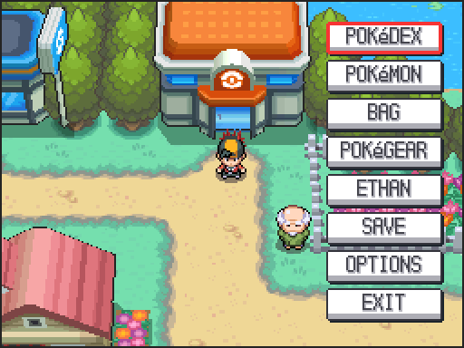
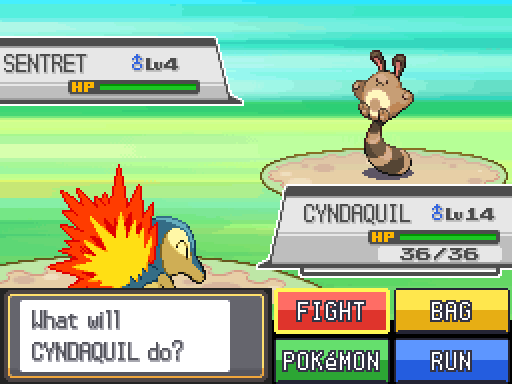
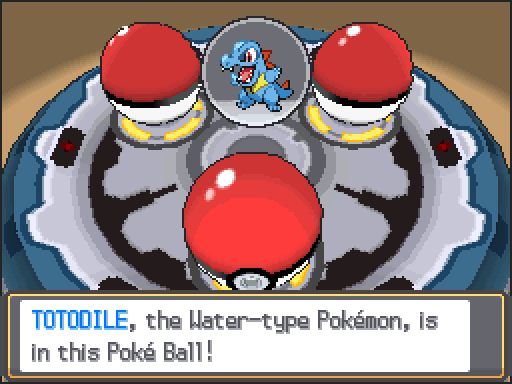
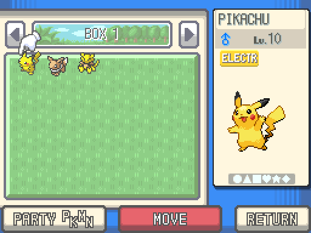
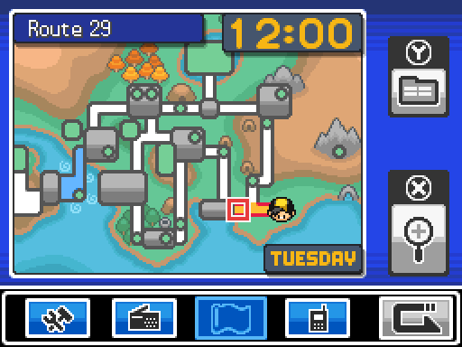
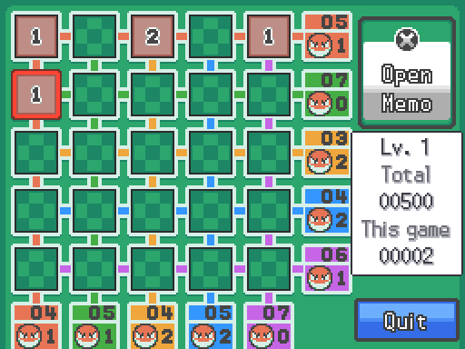
Also: holding Space shows the other DS screen; the D-pad moves a pen for the screens you draw on (the signature, the scratch cards, the Alph puzzles, Ball Capsule seals); a touch stays with the picture it began on. Every screen of the game, as the DS showed it and as it looks on one screen, is on One screen, screen by screen.
Touch buttons beside the picture, made your own.
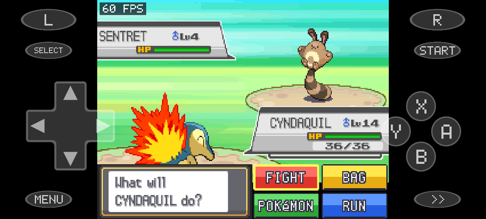
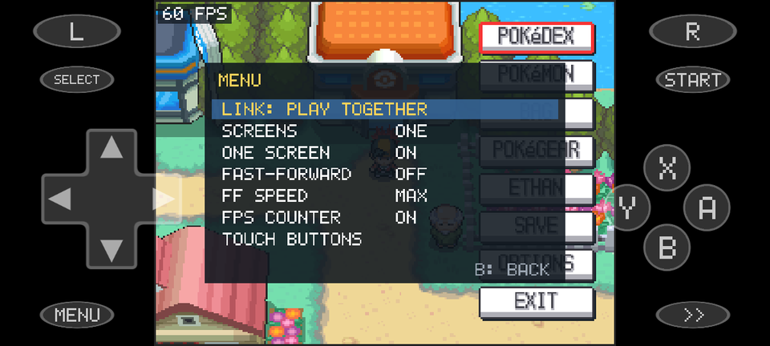
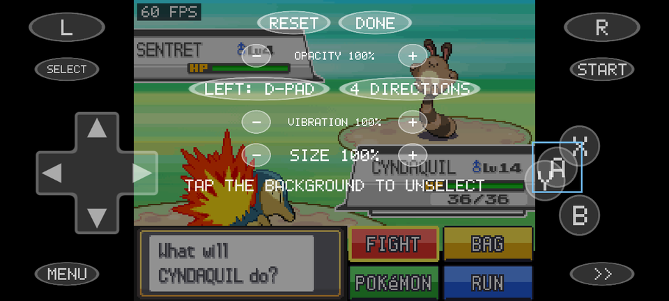
What the DS had besides its screens: the wireless, the Pokéwalker, the GBA slot and the microphone.
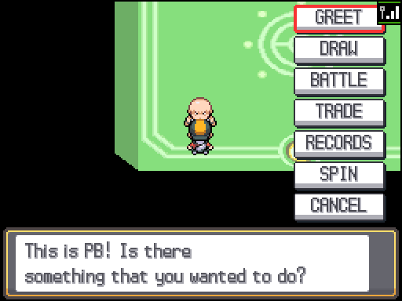
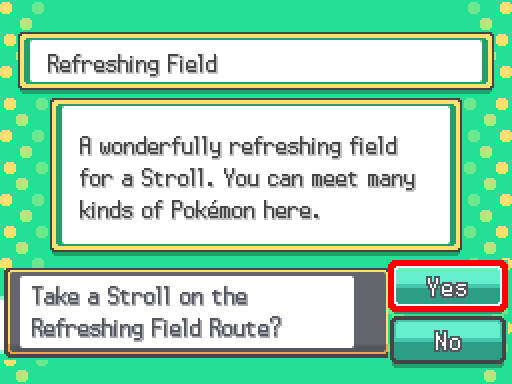
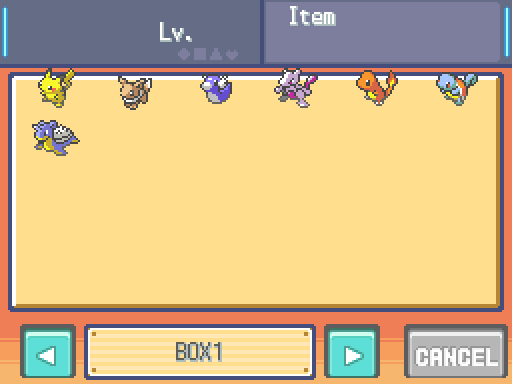
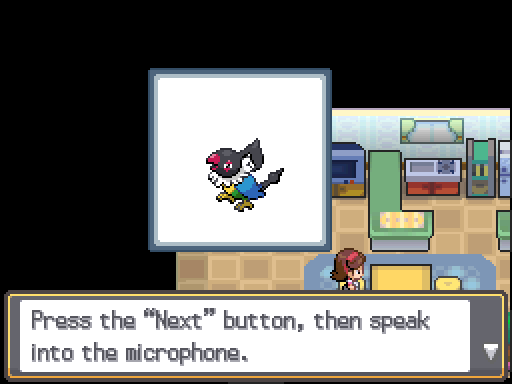
Loading the changes. Each version appears here with its date and what it brought.